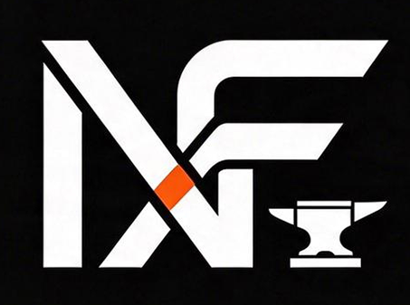
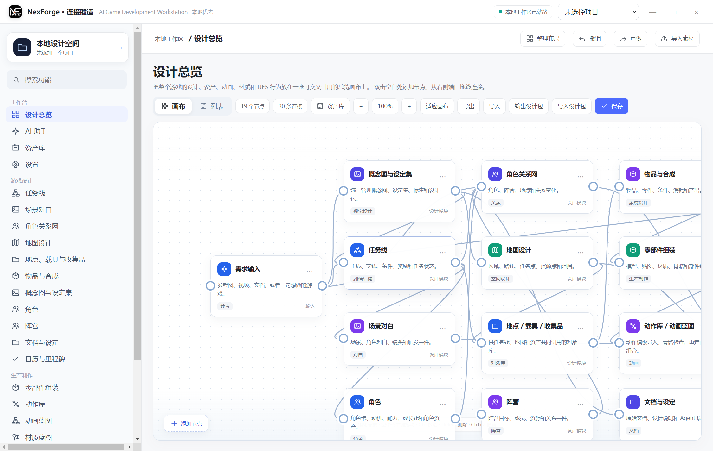

面向 UE5 与 Blender 的本地优先工作台：设计总览、资产库、动作模板、AI 助手和生产模块集中在一个桌面软件里。下载后双击安装，像普通 Windows 软件一样使用。

安装后首次启动没有项目、资产、模型配置或历史记录；用户数据从空开始，保存在自己的用户目录。
项目、资产索引与缩略图缓存都在本机。AI 可接云端 API，也可接本机 Ollama / LM Studio。
工作站本身可独立使用；需要真实生产联动时，再安装 Blender / UE5 与对应桥接插件。